Visual Communication · Brand · Type
The person behind the work
I'm Laken Clark, a Junior BFA Graphic Design student at Central Michigan University.
My work lives somewhere between all of the arts. I have always been infatuated with creative digital work, but I also have a deep love for traditional media. My fine art practice keeps my eye honest. Oil painting, charcoal figure drawing, printmaking, linocut — I've learned a ton about contrast and weight from the press and a pencil and that carries into everything I design.
I'm drawn to work that's dark, deliberate, and precise. High contrast. Built to last. Long term, I want to own a print shop — the kind where craft and design aren't in opposition. Until then, I'm making the work.
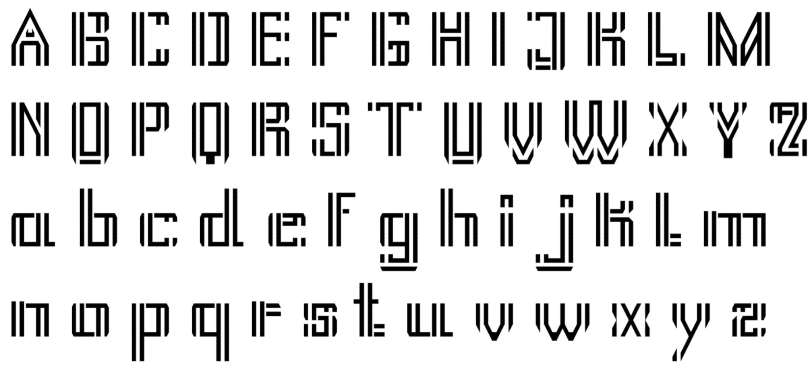

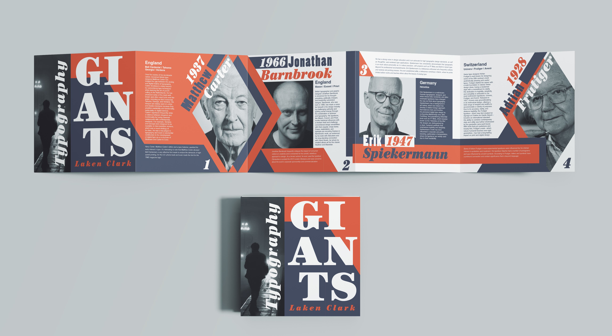

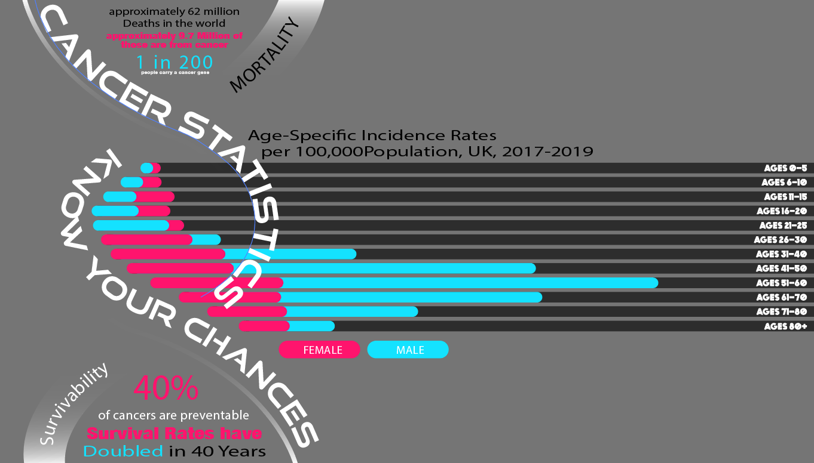
Typography based projects from various courses and personal work.
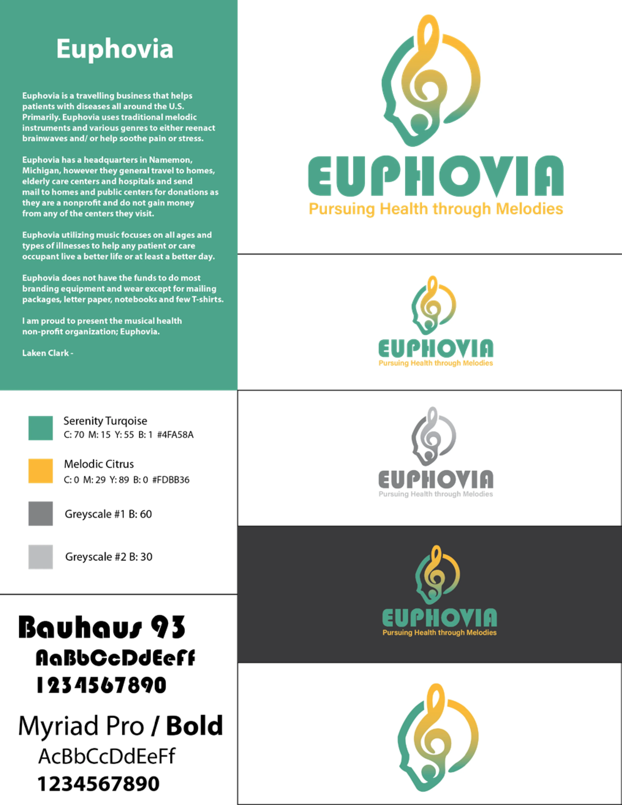


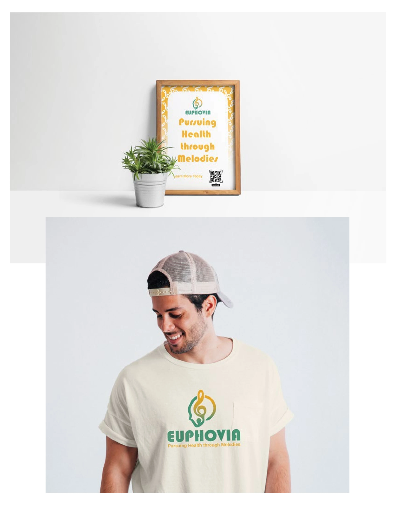
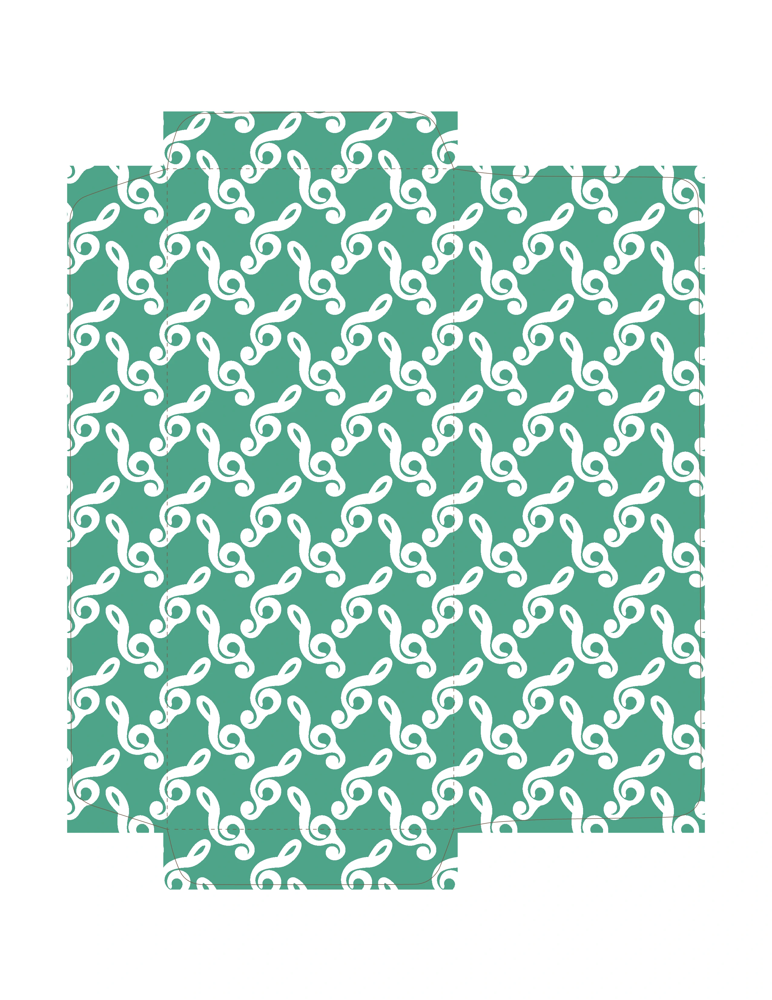
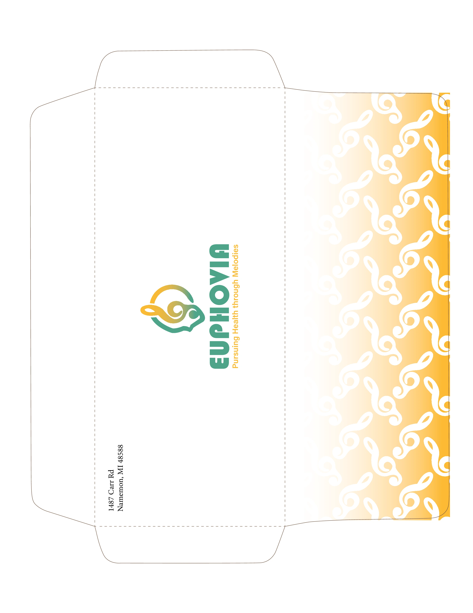
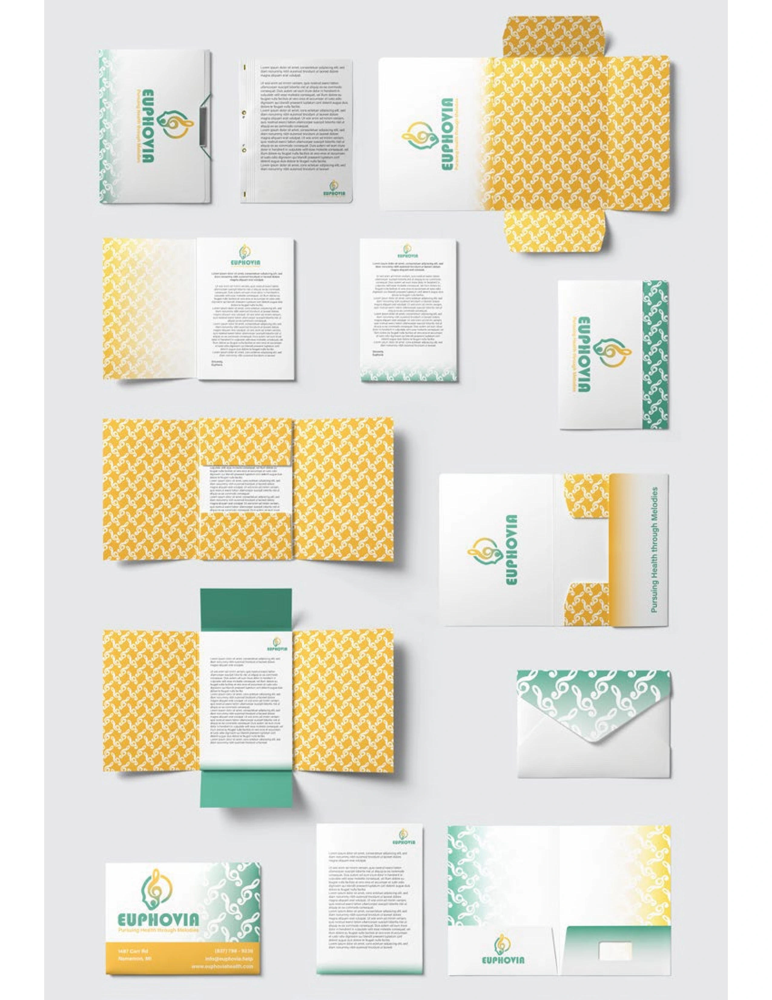
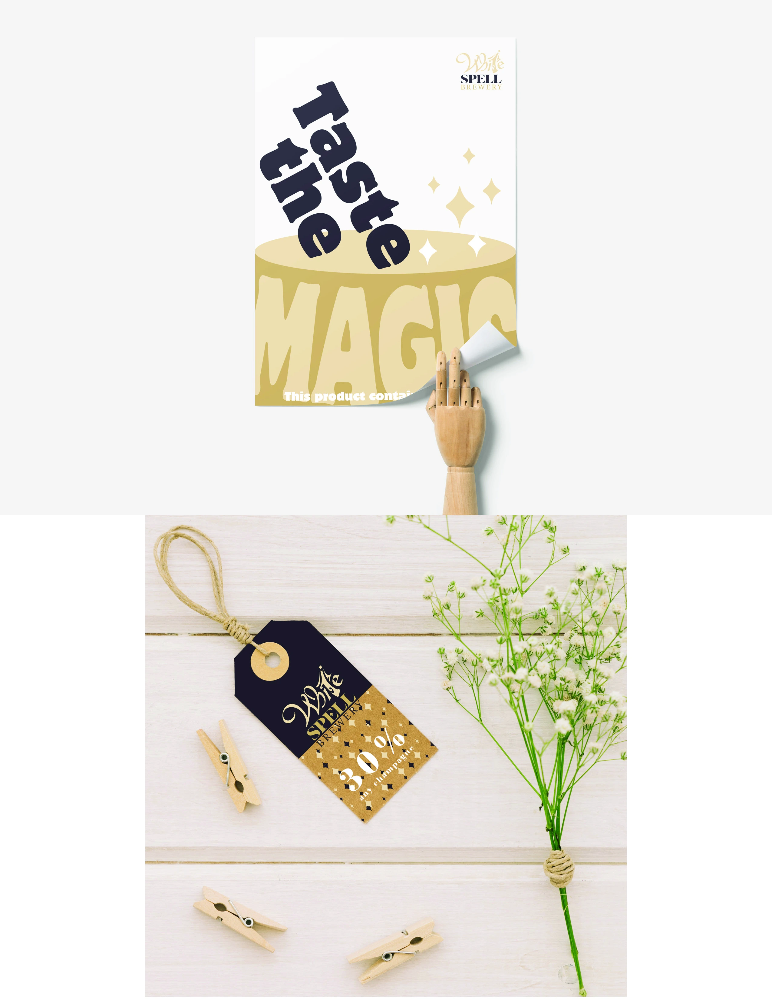
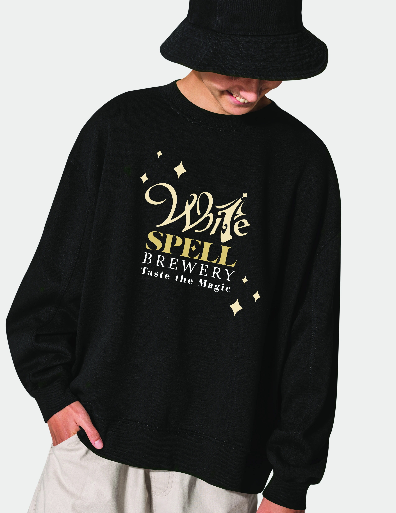
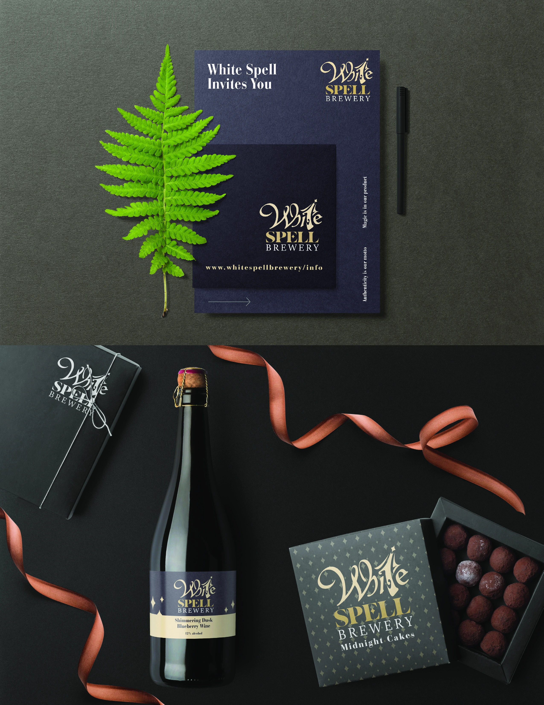
A suite of logo and branding projects showcasing identity systems, wordmarks, and brand collateral design work.


Graphite and pencil drawing explorations from my Drawing 1 and 2 class at Delta College featuring a master study of John Singer Sargeant and my own hands.


Figure and tonal studies in charcoal and graphite. I focused on gesture, proportion, and capturing the human form and mainly used charcoal as my medium.


Relief, screen print and lithography explorations featuring some of my favorite media. Using ink and pressure to create layered, textured imagery.

Acrylic painting of myself. This was an assignment at Delta College in my 2D Media course to work on different color values in a simplified way.


Oil paintings from my intro to painting course. We stretched our own canvases. Besides the first project being a 16x20 in, the rest were all 20x24 in.